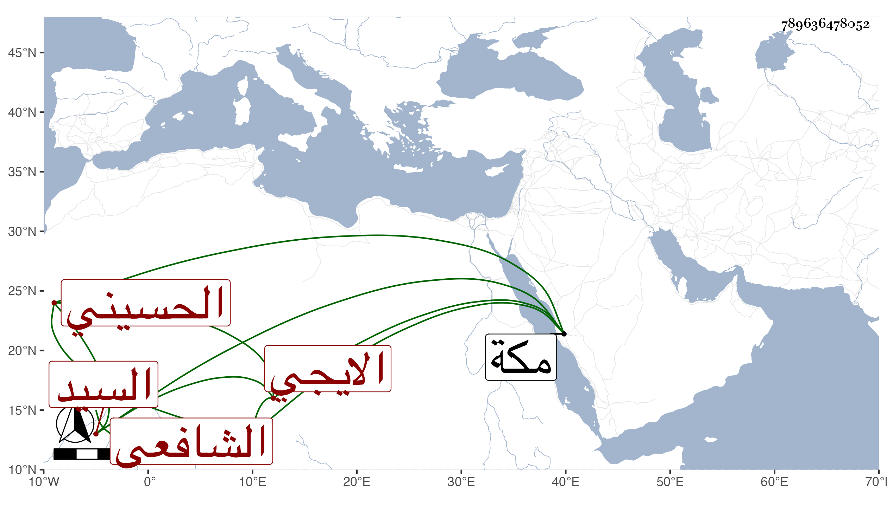

0902Sakhawi.DawLamic.ITO20230111-ara1.EIS1600.789636478052
Biography ID: 789636478052
269
عبد الرحمن بن عبيد الله بن محمد بن محمد بن محمد بن عبد الله السيد العفيف أبو حفص بن النور بن العلاء بن العفيف الحسيني الايجي الشافعي الآتي كل من جد أبيه فمن يليه وأخوه محمد وصاحب الترجمة أصغرهما . ولد في ليلة الاثنين سابع عشري ذي الحجة سنة اثنتين وسبعين وثمانمائة . ولازمني بمكة في أخذ جملة بقراءته وقراءة غيره ومما قرأه اليسير من الخلاصة للطيبي تفهما وكتبت له إجازة حافلة ملخصة في التاريخ الكبير .
